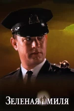
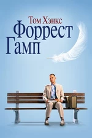
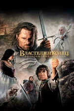

Зеленая миля
Пол Эджкомб — начальник блока смертников в тюрьме «Холодная гора», каждый из узников которого однажды проходит «зеленую милю» по пути к месту казни. Пол повидал много заключённых и надзирателей за время работы. Однако гигант Джон Коффи, обвинённый в страшном преступлении, стал одним из самых необычных обитателей блока.
Список Шиндлера
Фильм рассказывает реальную историю загадочного Оскара Шиндлера, члена нацистской партии, преуспевающего фабриканта, спасшего во время Второй мировой войны почти 1200 евреев.
Побег из Шоушенка

Бухгалтер Энди Дюфрейн обвинён в убийстве собственной жены и её любовника. Оказавшись в тюрьме под названием Шоушенк, он сталкивается с жестокостью и беззаконием, царящими по обе стороны решётки. Каждый, кто попадает в эти стены, становится их рабом до конца жизни. Но Энди, обладающий живым умом и доброй душой, находит подход как к заключённым, так и к охранникам, добиваясь их особого к себе расположения.
Форрест Гамп
Сидя на автобусной остановке, Форрест Гамп — не очень умный, но добрый и открытый парень — рассказывает случайным встречным историю своей необыкновенной жизни. С самого малолетства парень страдал от заболевания ног, соседские мальчишки дразнили его, но в один прекрасный день Форрест открыл в себе невероятные способности к бегу. Подруга детства Дженни всегда его поддерживала и защищала, но вскоре дороги их разошлись.
Властелин колец: Возвращение короля
Повелитель сил тьмы Саурон направляет свою бесчисленную армию под стены Минас-Тирита, крепости Последней Надежды. Он предвкушает близкую победу, но именно это мешает ему заметить две крохотные фигурки — хоббитов, приближающихся к Роковой Горе, где им предстоит уничтожить Кольцо Всевластья.